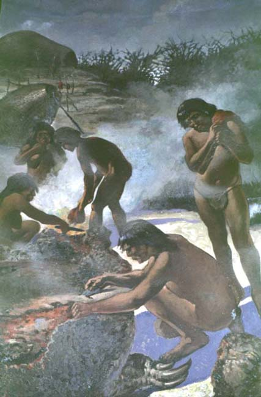

|
|  |
|
Luis de Servi, Descuartizando un gliptodonte
|
Thus, rather than 'to make prehistory into history', as Francisco P. Moreno, the founder and director of the La Plata Museum claimed, the new temporalities of palaeontology and anthropology actually evicted a history of migrations, struggles, and transculturations from their narrative: while the new, remote origins of Argentine nature and man provided monumental allegories for the finisecular state's new beginning, they also transformed almost its entire history (that is, all that was related to its former character of a frontier society, with its changing, cross-cultural political and military alliances, economic and cultural exchanges and competitions) into prehistory. State formation, we might say, is a beginning precisely because it succeeds in relegating all that precedes it to a temporality of origins: to a memory grounded in oblivion.
|